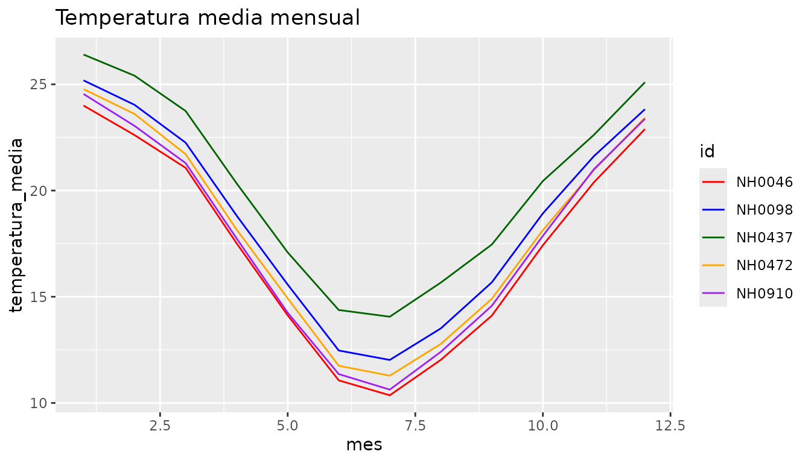
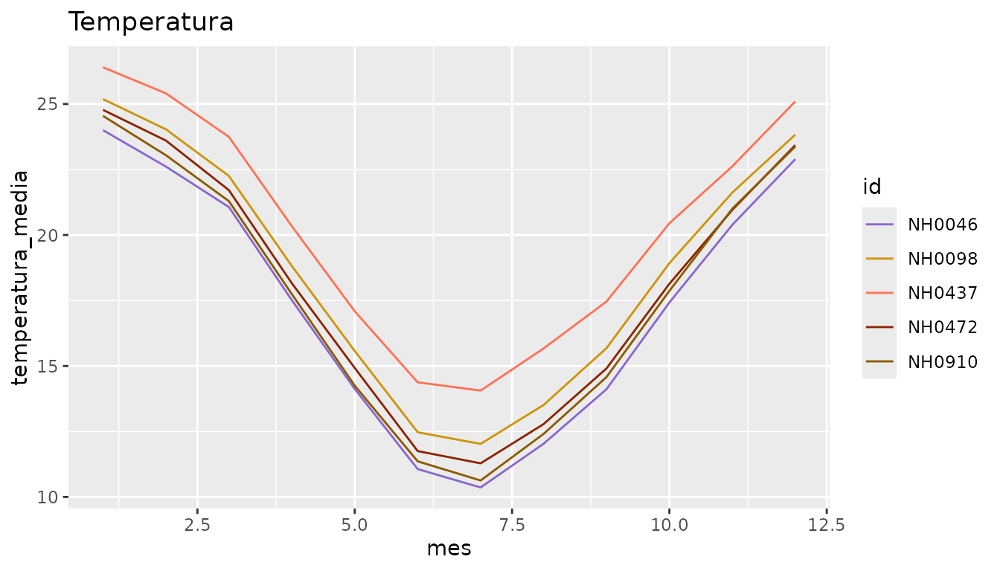
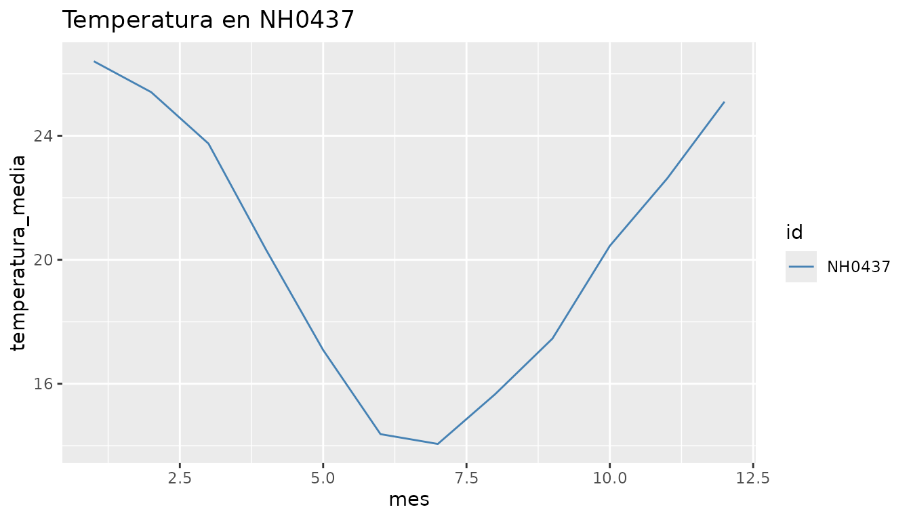
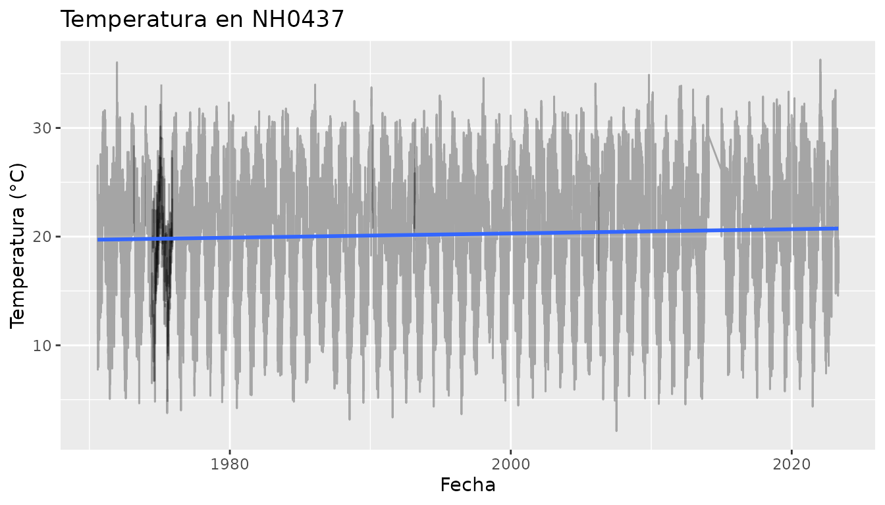
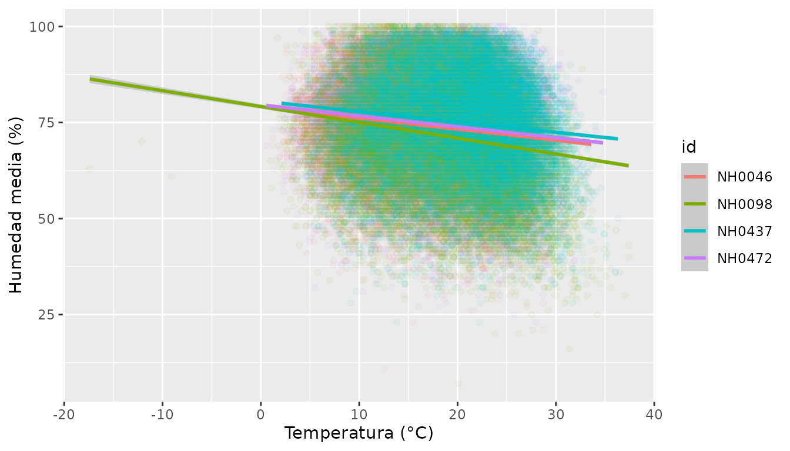
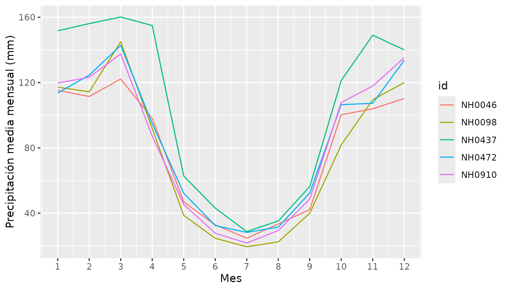

¿Qué hace este paquete?
estacionesmeteo permite leer, resumir y graficar datos diarios de estaciones meteorológicas del INTA. Los datos vienen del sistema SIGA del INTA y están disponibles en el repositorio de la materia Programación II.
Esta guía muestra un análisis de punta a punta con las tres funciones del paquete.
Los datos incluidos
El paquete trae el dataset estaciones, con mediciones
diarias de cinco estaciones.
head(estaciones)
#> id fecha temperatura_abrigo_150cm temperatura_abrigo_150cm_maxima
#> 1 NH0472 1961-07-01 11.1 13.4
#> 2 NH0472 1961-07-02 5.5 10.5
#> 3 NH0472 1961-07-03 6.0 10.8
#> 4 NH0472 1961-07-04 NA NA
#> 5 NH0472 1961-07-05 12.4 14.8
#> 6 NH0472 1961-07-06 11.0 16.5
#> temperatura_abrigo_150cm_minima precipitacion_pluviometrica
#> 1 8.8 0
#> 2 0.5 0
#> 3 1.2 0
#> 4 7.0 0
#> 5 10.0 0
#> 6 5.5 0
#> humedad_media_8_14_20
#> 1 81
#> 2 80
#> 3 62
#> 4 93
#> 5 92
#> 6 80
unique(estaciones$id)
#> [1] "NH0472" "NH0910" "NH0046" "NH0098" "NH0437"Cada fila es un día en una estación. La columna id
identifica la estación y temperatura_abrigo_150cm es la
temperatura media de abrigo a 150 cm, en grados Celsius. Con
?estaciones se puede ver la descripción de todas las
columnas.
Leer los datos de otra estación
leer_estacion() descarga los datos de cualquier estación
del repositorio y los lee. Si el archivo ya está descargado, lo lee sin
volver a descargarlo.
NH0437 <- leer_estacion("NH0437", "datos/NH0437.csv")Este bloque no se ejecuta en la guía porque necesita conexión a internet.
Si el código de la estación no es texto, la función da un error claro:
leer_estacion(437, "datos/NH0437.csv")
#> Error in `leer_estacion()`:
#> ! id_estacion debe ser texto.
#> ℹ La variable ingresada es un numeric.Resumir la temperatura
tabla_resumen_temperatura() calcula la media y el desvío
estándar de la temperatura de abrigo de cada estación.
tabla_resumen_temperatura(estaciones)
#> # A tibble: 2 × 6
#> variable NH0046 NH0098 NH0437 NH0472 NH0910
#> <chr> <dbl> <dbl> <dbl> <dbl> <dbl>
#> 1 media 17.3 18.6 20.2 18.0 17.7
#> 2 desvio 5.90 5.98 5.77 5.94 6.12NH0437 es la estación más cálida, con una media de alrededor de 20 °C. Las demás tienen medias de entre 17 y 19 °C. El desvío es parecido en todas, de alrededor de 6 °C.
Graficar la temperatura mensual
grafico_temperatura_mensual() grafica el promedio de
temperatura de cada mes, con una línea por estación.
grafico_temperatura_mensual(
estaciones,
colores = c("red", "blue", "darkgreen", "orange", "purple"),
titulo = "Temperatura media mensual"
)
Las cinco estaciones siguen el mismo ciclo anual: los meses más cálidos son de diciembre a febrero y los más fríos, junio y julio. NH0437 es la más cálida en todos los meses.
Si no se indican colores, la función los elige al azar:
grafico_temperatura_mensual(estaciones)
También se puede graficar una sola estación:
NH0437 <- estaciones[estaciones$id == "NH0437", ]
grafico_temperatura_mensual(NH0437, colores = "steelblue", titulo = "Temperatura en NH0437")
## Un análisis más completoAdemás de las funciones del paquete, los datos de
estaciones se pueden analizar con dplyr y ggplot2. Esta
sección muestra algunos ejemplos.
¿Qué período cubre cada estación?
estaciones |>
dplyr::group_by(id) |>
dplyr::summarise(desde = min(fecha), hasta = max(fecha), dias = dplyr::n())
#> # A tibble: 5 × 4
#> id desde hasta dias
#> <chr> <date> <date> <int>
#> 1 NH0046 1973-01-01 2023-03-31 17041
#> 2 NH0098 1956-04-01 2023-04-27 23733
#> 3 NH0437 1970-08-01 2023-04-27 18929
#> 4 NH0472 1961-07-01 2017-06-01 20425
#> 5 NH0910 1975-01-01 2017-07-31 15553Las estaciones no cubren el mismo período: NH0098 empieza en 1956 y NH0910 en 1975. NH0472 y NH0910 terminan en 2017, y las demás en 2023. Conviene tenerlo en cuenta al compararlas.
¿Cuántos datos faltan?
estaciones |>
dplyr::group_by(id) |>
dplyr::summarise(porcentaje_na = round(mean(is.na(temperatura_abrigo_150cm)) * 100, 2))
#> # A tibble: 5 × 2
#> id porcentaje_na
#> <chr> <dbl>
#> 1 NH0046 1.52
#> 2 NH0098 0.81
#> 3 NH0437 1.01
#> 4 NH0472 0.32
#> 5 NH0910 0.3En todas las estaciones falta menos del 2 % de los datos de temperatura, así que los promedios son confiables.
Valores sospechosos
estaciones |>
dplyr::group_by(id) |>
dplyr::summarise(minima = min(temperatura_abrigo_150cm, na.rm = TRUE),
maxima = max(temperatura_abrigo_150cm, na.rm = TRUE))
#> # A tibble: 5 × 3
#> id minima maxima
#> <chr> <dbl> <dbl>
#> 1 NH0046 -0.25 34.6
#> 2 NH0098 -17.4 37.4
#> 3 NH0437 2.1 36.3
#> 4 NH0472 0.55 34.8
#> 5 NH0910 0 35.2La mínima de NH0098, de -17.4 °C, es mucho más baja que la del resto, que no baja de -0.25 °C. Podría ser un error de medición y conviene revisarla antes de usar esos datos.
¿Cambió la temperatura con los años?
estaciones |>
dplyr::filter(id == "NH0437") |>
ggplot2::ggplot(ggplot2::aes(x = fecha, y = temperatura_abrigo_150cm)) +
ggplot2::geom_line(alpha = 0.3) +
ggplot2::geom_smooth(method = "lm") +
ggplot2::labs(title = "Temperatura en NH0437", x = "Fecha", y = "Temperatura (°C)")
En NH0437 la recta de regresión sube unos 0.2 °C por década: la temperatura media aumentó alrededor de 1 °C entre 1970 y 2023. Es un cambio chico frente a la diferencia entre verano e invierno, pero la temperatura no se mantuvo constante.
Temperatura y humedad
estaciones |>
dplyr::filter(!is.na(humedad_media_8_14_20)) |>
ggplot2::ggplot(ggplot2::aes(x = temperatura_abrigo_150cm, y = humedad_media_8_14_20, color = id)) +
ggplot2::geom_point(alpha = 0.05) +
ggplot2::geom_smooth(method = "lm") +
ggplot2::labs(x = "Temperatura (°C)", y = "Humedad media (%)")
La relación es débil y negativa: en los días más cálidos, la humedad tiende a ser un poco menor, pero los puntos están muy dispersos. NH0910 no aparece porque no tiene datos de humedad.
Precipitación a lo largo del año
estaciones |>
dplyr::mutate(anio = lubridate::year(fecha), mes = lubridate::month(fecha)) |>
dplyr::group_by(id, anio, mes) |>
dplyr::summarise(lluvia = sum(precipitacion_pluviometrica, na.rm = TRUE), .groups = "drop") |>
dplyr::group_by(id, mes) |>
dplyr::summarise(lluvia_media = mean(lluvia), .groups = "drop") |>
ggplot2::ggplot(ggplot2::aes(x = mes, y = lluvia_media, color = id)) +
ggplot2::geom_line() +
ggplot2::scale_x_continuous(breaks = 1:12) +
ggplot2::labs(x = "Mes", y = "Precipitación media mensual (mm)")
En todas las estaciones llueve más entre octubre y abril, y el invierno es seco: en julio caen entre 20 y 30 mm. NH0437 es la más lluviosa, con unos 1230 mm por año, mientras que las demás reciben entre 890 y 980 mm.
Resumen: analizar una estación nueva
Con las tres funciones, el análisis completo de cualquier estación del repositorio lleva tres líneas:
nueva <- leer_estacion("NH0472", "datos/NH0472.csv")
tabla_resumen_temperatura(nueva)
grafico_temperatura_mensual(nueva, titulo = "Temperatura en NH0472")